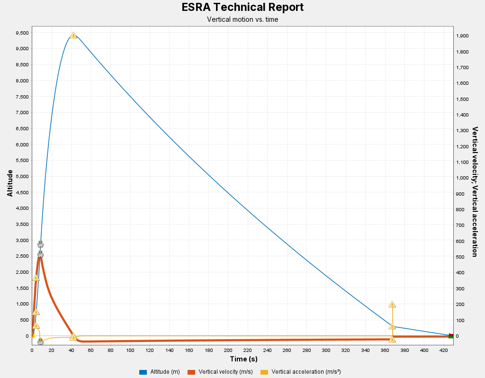

Why the aft fins are large
I kept substantial fin area at the tail because the forward canards add a destabilizing pitch and yaw contribution. At an angle of attack, their normal force acts ahead of the center of gravity. The aft fins need to counter that contribution and still provide a restoring moment that turns the rocket toward the airflow.
Putting area far behind the center of gravity gives the fin force a longer lever arm. Increasing that area also increases the tail’s normal-force response. In the displayed configuration, the center of pressure sits about 0.40 m behind the center of gravity at Mach 0.30, giving a static margin of 2.51 calibers. I use that result as one point in the flight rather than a margin that remains fixed.
The cost of more fin area
I compare larger fins against their drag and structural penalties before keeping the change. The example flight reaches Mach 1.61, so fin thickness and leading-edge geometry matter for wave drag as the rocket passes through transonic and supersonic flight. Extra wetted area also adds skin-friction drag, and the fins add mass.
Increasing span moves more loading away from the root and increases bending moment. I use the fin-loading work to inform reinforcement; flutter still requires its own structural assessment. The fin choice has to provide enough stability while leaving enough altitude and structural margin.
Moving mass forward or moving pressure aft
I compare internal mass placement with fin changes because both can increase the distance between the center of gravity and center of pressure. Moving payload, avionics, or recovery hardware forward changes the center of gravity. Increasing the aft aerodynamic contribution moves the center of pressure rearward.
I consider component placement before nose ballast because ballast adds mass the motor must accelerate. That can reduce rail-exit speed and apogee. Relocating existing hardware may avoid that added mass, but only if the parts still fit and the recovery and avionics arrangements remain workable.
Why motor choice is more than total impulse
I compare thrust curves because the rocket needs enough speed as it leaves the rail for the fins to produce useful restoring forces. Two motors with similar total impulse can deliver very different early thrust, rail-exit speed, and peak Mach.
A rapid acceleration also sends the rocket through dense air at higher speed, increasing drag and aerodynamic loading. A longer burn can reduce peak speed for a given configuration, but increases the time spent losing energy to gravity during powered flight. I compare rail-exit speed, peak Mach, and apogee together before choosing a motor.
Following stability through the flight
I track the stability margin through ascent because propellant consumption moves the center of gravity and changing Mach number moves the center of pressure. I check the result again after a change to the fins, component masses, positions, or motor.
I also consider the wind response. A stronger restoring moment can turn the rocket into a crosswind, tilting the climb and reducing vertical altitude. That is why I compare the trajectory as well as the static margin when deciding whether a fin change helps. I match the geometry, masses, and motor inputs across the flight tools before comparing their predictions.
Example flight simulation
The displayed OpenRocket run predicts 9,424 m of apogee, about 30,900 ft, with a peak speed of 526 m/s (Mach 1.61) and peak acceleration of 101 m/s². The altitude is close to the 30,000 ft target, while the speed requires the aerodynamic analysis to cover compressibility and the corresponding fin loads. I use the altitude, speed, and acceleration histories together to judge the configuration.

Automating the comparisons
I used the flight-model decisions on this page to define the variables and checks in my summer scripts. The OpenRocket optimizer searches motor and geometry combinations, while the RocketPy model makes the phase changes and input accounting explicit. The two-stage results on those pages are earlier studies; the OpenRocket screenshot here shows the single-stage configuration.